Column Data Types:
| Column | Type | Pandas dtype | Mixed Types |
|---|---|---|---|
| age | numeric | int64 | |
| sex | categorical | object | |
| bmi | numeric | float64 | |
| children | numeric | int64 | |
| smoker | categorical | object | |
| region | categorical | object | |
| charges | numeric | float64 |
| age | sex | bmi | children | smoker | region | charges |
|---|---|---|---|---|---|---|
| 19 | female | 27.9 | 0 | yes | southwest | 16884.9 |
| 18 | male | 33.77 | 1 | no | southeast | 1725.55 |
| 28 | male | 33 | 3 | no | southeast | 4449.46 |
| 33 | male | 22.705 | 0 | no | northwest | 21984.5 |
| 32 | male | 28.88 | 0 | no | northwest | 3866.86 |
| 31 | female | 25.74 | 0 | no | southeast | 3756.62 |
| 46 | female | 33.44 | 1 | no | southeast | 8240.59 |
| 37 | female | 27.74 | 3 | no | northwest | 7281.51 |
| column | count | mean | median | variance | std | min | max | skewness | kurtosis | outliers | missing | missing_pct | shapiro_p | suggestions |
|---|---|---|---|---|---|---|---|---|---|---|---|---|---|---|
| age | 1338 | 39.2 | 39 | 197 | 14 | 18 | 64 | 0.0556 | -1.24 | 0 | 0 | 0 | 5.69e-22 | ['Standardize or normalize (variance much larger than mean).', 'Shapiro–Wilk test: not normal, consider transformation or non-parametric models.'] |
| bmi | 1338 | 30.7 | 30.4 | 37.2 | 6.1 | 16 | 53.1 | 0.284 | -0.055 | 32 | 0 | 0 | 2.6e-05 | ['Shapiro–Wilk test: not normal, consider transformation or non-parametric models.'] |
| children | 1338 | 1.09 | 1 | 1.45 | 1.21 | 0 | 5 | 0.937 | 0.197 | 43 | 0 | 0 | 5.07e-36 | ['Shapiro–Wilk test: not normal, consider transformation or non-parametric models.'] |
| charges | 1338 | 1.33e+04 | 9.38e+03 | 1.47e+08 | 1.21e+04 | 1.12e+03 | 6.38e+04 | 1.51 | 1.6 | 136 | 0 | 0 | 1.15e-36 | ['Apply log or Box-Cox transform to reduce right skew.', 'Standardize or normalize (variance much larger than mean).', 'Winsorize or remove outliers (>5%).', 'Shapiro–Wilk test: not normal, consider transformation or non-parametric models.'] |
Suggested Transforms / Actions:
- age
- Standardize or normalize (variance much larger than mean).
- Shapiro–Wilk test: not normal, consider transformation or non-parametric models.
- bmi
- Shapiro–Wilk test: not normal, consider transformation or non-parametric models.
- children
- Shapiro–Wilk test: not normal, consider transformation or non-parametric models.
- charges
- Apply log or Box-Cox transform to reduce right skew.
- Standardize or normalize (variance much larger than mean).
- Winsorize or remove outliers (>5%).
- Shapiro–Wilk test: not normal, consider transformation or non-parametric models.
Insights:
age
bmi
children
charges
| column | count | cardinality | unique_sample | top_freq | mode | missing | missing_pct | label_inconsistency | max_imbalance | hasmixedtypes | suggestions |
|---|---|---|---|---|---|---|---|---|---|---|---|
| sex | 1338 | 2 | ['male', 'female'] | 676 | male | 0 | 0 | False | 0.505 | False | ['One-hot encoding is suitable.'] |
| smoker | 1338 | 2 | ['no', 'yes'] | 1064 | no | 0 | 0 | False | 0.795 | False | ['One-hot encoding is suitable.', 'Highly imbalanced (>70% one class); consider resampling or weighting.'] |
| region | 1338 | 4 | ['southeast', 'southwest', 'northwest', 'northeast'] | 364 | southeast | 0 | 0 | False | 0.272 | False | ['One-hot encoding is suitable.'] |
Suggested Transforms / Actions:
- sex
- One-hot encoding is suitable.
- smoker
- One-hot encoding is suitable.
- Highly imbalanced (>70% one class); consider resampling or weighting.
- region
- One-hot encoding is suitable.
Insights:
sex
smoker
region
No data.
Insights:
Pearson Correlation:
| age | bmi | children | charges |
|---|---|---|---|
| 1 | 0.109 | 0.0425 | 0.299 |
| 0.109 | 1 | 0.0128 | 0.198 |
| 0.0425 | 0.0128 | 1 | 0.068 |
| 0.299 | 0.198 | 0.068 | 1 |
Cramér’s V (Categorical):
| sex | smoker | region |
|---|---|---|
| nan | 0.0762 | 0.018 |
| 0.0762 | nan | 0.0741 |
| 0.018 | 0.0741 | nan |
Insights:
age
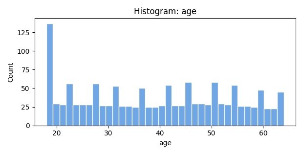
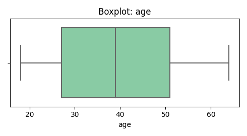
bmi
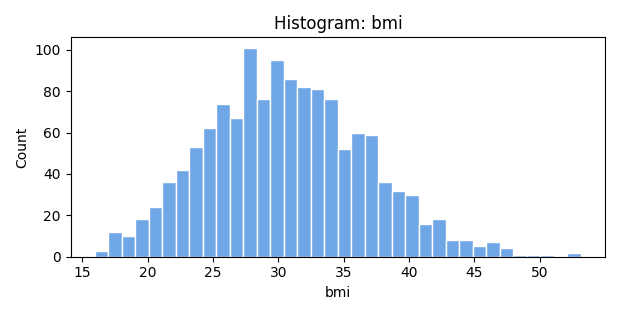
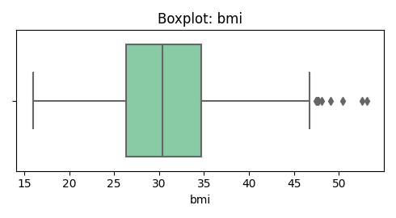
children
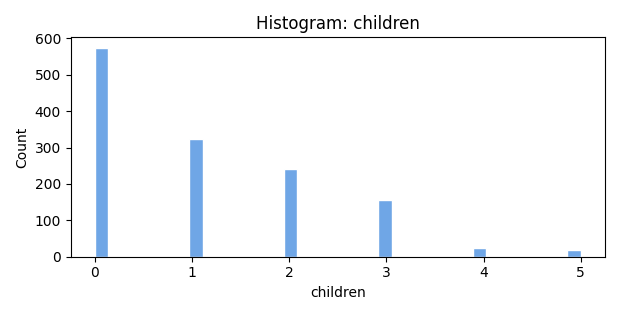
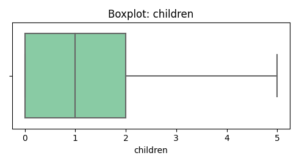
charges
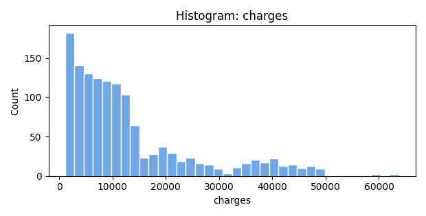
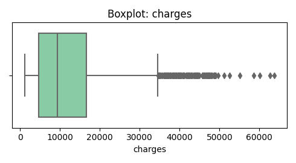
sex
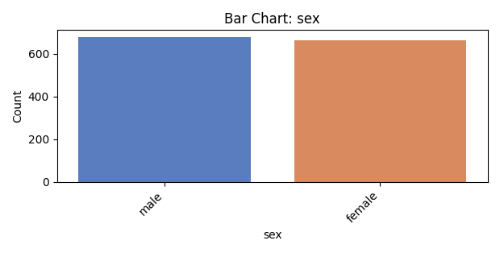
smoker
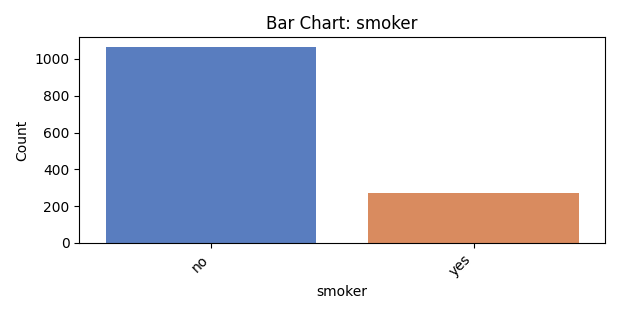
region
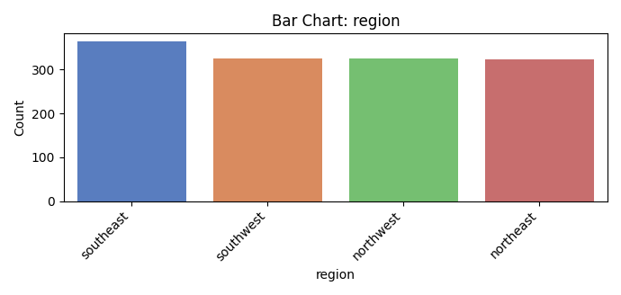
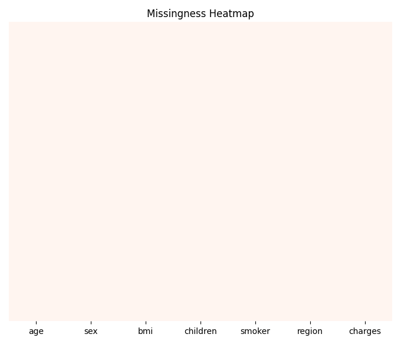
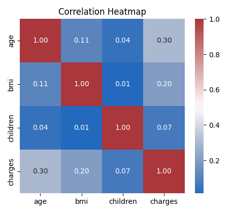